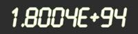
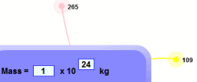
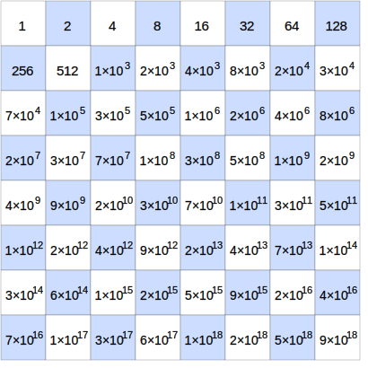

Scientific Notation
Scientific Notation (also called Standard Form in Britain) is a special way of writing numbers:
| Like this: | ||
| Or this: |
It makes it easy to use big and small values.
OK, How Does it Work?
Example: 700
Why is 700 written as 7 × 102 in Scientific Notation ?
Both 700 and 7 × 102 have the same value, just shown in different ways.
Example: 4,900,000,000
1,000,000,000 = 109 ,
so 4,900,000,000 = 4.9 × 109 in Scientific Notation
The number is written in two parts:
- Just the digits, with the decimal point placed after the first digit, followed by
- × 10 to a power that puts the decimal point where it should be
(i.e. it shows how many places to move the decimal point).

In this example, 5326.6 is written as 5.3266 × 103,
because 5326.6 = 5.3266 × 1000 = 5.3266 × 103
Try It Yourself
Enter a number and see it in Scientific Notation:
Now try to use Scientific Notation yourself:
Other Ways of Writing It
3.1 × 10^8
We can use the ^ symbol (above the 6 on a keyboard), as it is easy to type.
Example: 3 × 10^4 is the same as 3 × 104
- 3 × 10^4 = 3 × 10 × 10 × 10 × 10 = 30,000

Calculators often use "E" or "e" like this:
Example: 6E+5 is the same as 6 × 105
- 6E+5 = 6 × 10 × 10 × 10 × 10 × 10 = 600,000
Example: 3.12E4 is the same as 3.12 × 104
- 3.12E4 = 3.12 × 10 × 10 × 10 × 10 = 31,200
How to Do it
To figure out the power of 10, think "how many places do I move the decimal point?"
| When the number is 10 or greater, the decimal point has to move to the left, and the power of 10 is positive. | |
|
When the number is smaller than 1, the decimal point has to move to the right, so the power of 10 is negative. |
Example: 0.0055 is written 5.5 × 10-3
Because 0.0055 = 5.5 × 0.001 = 5.5 × 10-3
Example: 3.2 is written 3.2 × 100
We didn't have to move the decimal point at all, so the power is 100
But it is now in Scientific Notation
Check!
After putting the number in Scientific Notation, just check that:
- The "digits" part is between 1 and 10 (it can be 1, but never 10)
- The "power" part shows exactly how many places to move the decimal point
Why Use It?
Because it makes it easier when dealing with very big or very small numbers, which are common in Scientific and Engineering work.
Example: it is easier to write (and read) 1.3 × 10-9 than 0.0000000013
It can also make calculations easier, as in this example:
Example: a tiny space inside a computer chip has been measured to be 0.00000256m wide, 0.00000014m long and 0.000275m high.
What is its volume?
Let's first convert the three lengths into scientific notation:
- width: 0.000 002 56m = 2.56×10-6
- length: 0.000 000 14m = 1.4×10-7
- height: 0.000 275m = 2.75×10-4
Then multiply the digits together (ignoring the ×10s):
2.56 × 1.4 × 2.75 = 9.856
Last, multiply the ×10s:
10-6 × 10-7 × 10-4 = 10-17 (easier than it looks, just add −6, −4 and −7 together)
The result is 9.856×10-17 m3
It is used a lot in Science:
Example: Suns, Moons and Planets
The Sun has a Mass of 1.988 × 1030 kg.
Easier than writing 1,988,000,000,000,000,000,000,000,000,000 kg
(and that number gives a false sense of many digits of accuracy.)
Play With It!Use Scientific Notation |
 |
It can also save space! Here is what happens when you double on each square of a chess board:

Values are rounded off, so
53,6870,912 is shown as just 5×108
That last value, shown as 9×1018 is actually 9,223,372,036,854,775,808
Engineering Notation
Engineering Notation is like Scientific Notation, except that we only use powers of ten that are multiples of 3 (such as 103, 10-3, 1012 etc).
Examples:
- 2,700 is written 2.7 × 103
- 27,000 is written 27 × 103
- 270,000 is written 270 × 103
- 2,700,000 is written 2.7 × 106
Example: 0.00012 is written 120 × 10-6
Notice that the "digits" part can now be between 1 and 1,000 (it can be 1, but never 1,000).
The advantage is that we can replace the ×10s with Metric Numbers. So we can use standard words (such as thousand or million), prefixes (such as kilo, mega) or the symbol (k, M, etc)
Example: 19,300 meters is written 19.3 × 103 m, or 19.3 km
Example: 0.00012 seconds is written 120 × 10-6 s, or 120 microseconds